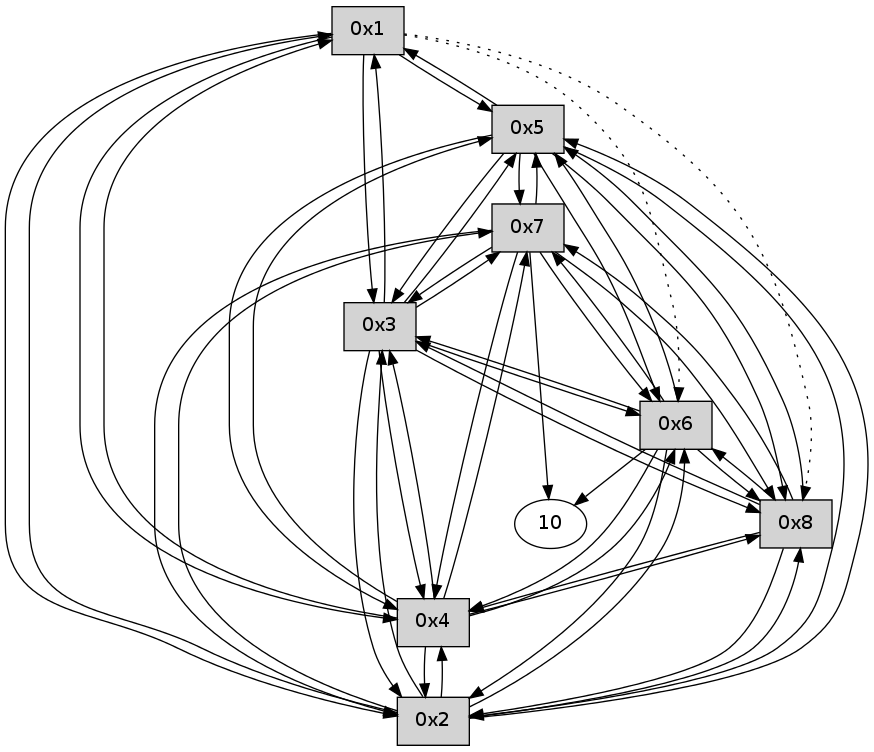

>> << IDX [start] -100 -25 -5 +0 +5 +25 +100 [190.063313007]
 Previous packets
----------------------------------------------------------------------
185.334493 beacon01(11f6) #0 coord=01,02,03,04,05,06,07,08,0a,09 cycle=688.0ms assoc
-- color-indic=0 64 ae 8d
185.344659 beacon02(11f6) #0 coord=01,02,03,04,05,06,07,08,0a,09 cycle=688.0ms assoc 64 3d bc
185.354628 beacon03(11f6) #0 coord=01,02,03,04,05,06,07,08,0a,09 cycle=688.0ms assoc 64 47 f1
185.364627 beacon04(11f6) #0 coord=01,02,03,04,05,06,07,08,0a,09 cycle=688.0ms assoc 64 30 1b
185.374629 beacon05(11f6) #0 coord=01,02,03,04,05,06,07,08,0a,09 cycle=688.0ms assoc 64 4a 56
185.384628 beacon06(11f6) #0 coord=01,02,03,04,05,06,07,08,0a,09 cycle=688.0ms assoc 64 c4 81
185.394630 beacon07(11f6) #0 coord=01,02,03,04,05,06,07,08,0a,09 cycle=688.0ms assoc 64 be cc
185.404632 beacon08(11f6) #0 coord=01,02,03,04,05,06,07,08,0a,09 cycle=688.0ms assoc 64 3b 5d
185.578005 [Hello(1): seq=65 sym=5,3,2,4 asym=8,6 sysInfo= stat=5:13,0,0,0/3:0,0,0,0/2:10,0,0,0/4:13,0,0,0/8:15,0,0,0/6:15,0,0,0]
----------------------------------------------------------------------
186.122629 beacon01(11f6) #0 coord=01,02,03,04,05,06,07,08,0a,09 cycle=688.0ms assoc
-- color-indic=0 64 9a 95
186.132789 beacon02(11f6) #0 coord=01,02,03,04,05,06,07,08,0a,09 cycle=688.0ms assoc 64 09 a4
186.142765 beacon03(11f6) #0 coord=01,02,03,04,05,06,07,08,0a,09 cycle=688.0ms assoc 64 73 e9
186.152765 beacon04(11f6) #0 coord=01,02,03,04,05,06,07,08,0a,09 cycle=688.0ms assoc 64 04 03
186.162765 beacon05(11f6) #0 coord=01,02,03,04,05,06,07,08,0a,09 cycle=688.0ms assoc 64 7e 4e
186.172765 beacon06(11f6) #0 coord=01,02,03,04,05,06,07,08,0a,09 cycle=688.0ms assoc 64 f0 99
186.182765 beacon07(11f6) #0 coord=01,02,03,04,05,06,07,08,0a,09 cycle=688.0ms assoc 64 8a d4
186.192771 beacon08(11f6) #0 coord=01,02,03,04,05,06,07,08,0a,09 cycle=688.0ms assoc 64 0f 45
186.240901 [Hello(5): seq=65 sym=1,2,7,6,3,8,4 sysInfo= stat=1:1,0,0,0/2:11,0,0,0/7:8,0,0,0/6:12,0,0,0/3:15,0,0,0/8:14,0,0,0/4:14,0,0,0]
186.246951 [Hello(3): seq=65 sym=1,2,7,5,6,8,4 sysInfo= stat=1:1,0,0,0/2:11,0,0,0/7:8,0,0,0/5:14,0,0,0/6:12,0,0,0/8:14,0,0,0/4:15,0,0,0]
186.291241 [Hello(7): seq=65 sym=10,5,6,8,3,2 sysInfo= stat=10:6,0,0,0/5:12,0,0,0/6:0,0,0,0/8:0,0,0,0/3:8,0,0,0/2:2,0,0,0]
186.303318 [Hello(2): seq=65 sym=1,7,5,3,8,4,6 sysInfo= stat=1:0,0,0,0/7:9,0,0,0/5:14,0,0,0/3:0,0,0,0/8:14,0,0,0/4:12,0,0,0/6:7,0,0,0]
186.343504 [Hello(8): seq=65 sym=2,7,5,6,3,4 sysInfo= stat=2:5,0,0,0/7:11,0,0,0/5:12,0,0,0/6:1,0,0,0/3:11,0,0,0/4:12,0,0,0]
186.354614 [Hello(4): seq=65 sym=1,2,5,6,3,8 asym=7 sysInfo= stat=1:0,0,0,0/2:12,0,0,0/5:14,0,0,0/6:11,0,0,0/3:1,0,0,0/8:14,0,0,0/7:1,0,0,0]
----------------------------------------------------------------------
186.910765 beacon01(11f6) #0 coord=01,02,03,04,05,06,07,08,0a,09 cycle=688.0ms assoc
-- color-indic=0 64 26 90
186.920944 beacon02(11f6) #0 coord=01,02,03,04,05,06,07,08,0a,09 cycle=688.0ms assoc 64 b5 a1
186.930900 beacon03(11f6) #0 coord=01,02,03,04,05,06,07,08,0a,09 cycle=688.0ms assoc 64 cf ec
186.940901 beacon04(11f6) #0 coord=01,02,03,04,05,06,07,08,0a,09 cycle=688.0ms assoc 64 b8 06
186.950901 beacon05(11f6) #0 coord=01,02,03,04,05,06,07,08,0a,09 cycle=688.0ms assoc 64 c2 4b
186.980906 beacon08(11f6) #0 coord=01,02,03,04,05,06,07,08,0a,09 cycle=688.0ms assoc 64 b3 40
187.027648 [Hello(1): seq=66 sym=5,3,2,4 asym=8,6 sysInfo= stat=5:14,0,0,0/3:1,0,0,0/2:10,0,0,0/4:14,0,0,0/8:0,0,0,0/6:15,0,0,0]
----------------------------------------------------------------------
187.698900 beacon01(11f6) #0 coord=01,02,03,04,05,06,07,08,0a,09 cycle=688.0ms assoc
-- color-indic=0 64 e2 9e
187.709070 beacon02(11f6) #0 coord=01,02,03,04,05,06,07,08,0a,09 cycle=688.0ms assoc 64 71 af
187.719035 beacon03(11f6) #0 coord=01,02,03,04,05,06,07,08,0a,09 cycle=688.0ms assoc 64 0b e2
187.729036 beacon04(11f6) #0 coord=01,02,03,04,05,06,07,08,0a,09 cycle=688.0ms assoc 64 7c 08
187.739036 beacon05(11f6) #0 coord=01,02,03,04,05,06,07,08,0a,09 cycle=688.0ms assoc 64 06 45
187.749036 beacon06(11f6) #0 coord=01,02,03,04,05,06,07,08,0a,09 cycle=688.0ms assoc 64 88 92
187.769040 beacon08(11f6) #0 coord=01,02,03,04,05,06,07,08,0a,09 cycle=688.0ms assoc 64 77 4e
187.805580 [Hello(2): seq=66 sym=1,7,5,3,8,4,6 sysInfo= stat=1:1,0,0,0/7:9,0,0,0/5:14,0,0,0/3:0,0,0,0/8:15,0,0,0/4:13,0,0,0/6:7,0,0,0]
187.808668 [Hello(6): seq=66 sym=10,7,5,3,8,4,2 sysInfo= stat=10:2,0,0,0/7:11,0,0,0/5:6,0,0,0/3:13,0,0,0/8:0,0,0,0/4:4,0,0,0/2:3,0,0,0]
187.820182 [Hello(5): seq=66 sym=1,2,7,6,3,8,4 sysInfo= stat=1:2,0,0,0/2:12,0,0,0/7:9,0,0,0/6:13,0,0,0/3:0,0,0,0/8:15,0,0,0/4:15,0,0,0]
187.832527 [Hello(3): seq=66 sym=1,2,7,5,6,8,4 sysInfo= stat=1:2,0,0,0/2:12,0,0,0/7:9,0,0,0/5:15,0,0,0/6:13,0,0,0/8:15,0,0,0/4:0,0,0,0]
187.890942 [Hello(4): seq=66 sym=1,2,5,6,3,8 asym=7 sysInfo= stat=1:1,0,0,0/2:13,0,0,0/5:15,0,0,0/6:12,0,0,0/3:2,0,0,0/8:14,0,0,0/7:1,0,0,0]
187.952142 [Hello(8): seq=66 sym=2,7,5,6,3,4 sysInfo= stat=2:6,0,0,0/7:12,0,0,0/5:13,0,0,0/6:2,0,0,0/3:12,0,0,0/4:14,0,0,0]
----------------------------------------------------------------------
188.487036 beacon01(11f6) #0 coord=01,02,03,04,05,06,07,08,0a,09 cycle=688.0ms assoc
-- color-indic=0 64 5e 9b
188.497217 beacon02(11f6) #0 coord=01,02,03,04,05,06,07,08,0a,09 cycle=688.0ms assoc 64 cd aa
188.507172 beacon03(11f6) #0 coord=01,02,03,04,05,06,07,08,0a,09 cycle=688.0ms assoc 64 b7 e7
188.517173 beacon04(11f6) #0 coord=01,02,03,04,05,06,07,08,0a,09 cycle=688.0ms assoc 64 c0 0d
188.527171 beacon05(11f6) #0 coord=01,02,03,04,05,06,07,08,0a,09 cycle=688.0ms assoc 64 ba 40
188.547172 beacon07(11f6) #0 coord=01,02,03,04,05,06,07,08,0a,09 cycle=688.0ms assoc 64 4e da
188.557176 beacon08(11f6) #0 coord=01,02,03,04,05,06,07,08,0a,09 cycle=688.0ms assoc 64 cb 4b
188.703553 [Hello(1): seq=67 sym=5,3,2,4 asym=8,6 sysInfo= stat=5:15,0,0,0/3:2,0,0,0/2:11,0,0,0/4:15,0,0,0/8:1,0,0,0/6:0,0,0,0]
----------------------------------------------------------------------
189.275175 beacon01(11f6) #0 coord=01,02,03,04,05,06,07,08,0a,09 cycle=688.0ms assoc
-- color-indic=0 64 8a ae
189.285343 beacon02(11f6) #0 coord=01,02,03,04,05,06,07,08,0a,09 cycle=688.0ms assoc 64 19 9f
189.295310 beacon03(11f6) #0 coord=01,02,03,04,05,06,07,08,0a,09 cycle=688.0ms assoc 64 63 d2
189.305310 beacon04(11f6) #0 coord=01,02,03,04,05,06,07,08,0a,09 cycle=688.0ms assoc 64 14 38
189.315311 beacon05(11f6) #0 coord=01,02,03,04,05,06,07,08,0a,09 cycle=688.0ms assoc 64 6e 75
189.325311 beacon06(11f6) #0 coord=01,02,03,04,05,06,07,08,0a,09 cycle=688.0ms assoc 64 e0 a2
189.335311 beacon07(11f6) #0 coord=01,02,03,04,05,06,07,08,0a,09 cycle=688.0ms assoc 64 9a ef
189.345315 beacon08(11f6) #0 coord=01,02,03,04,05,06,07,08,0a,09 cycle=688.0ms assoc 64 1f 7e
189.381476 [Hello(8): seq=67 sym=2,7,5,6,3,4 sysInfo= stat=2:6,0,0,0/7:12,0,0,0/5:13,0,0,0/6:2,0,0,0/3:12,0,0,0/4:14,0,0,0]
189.392182 [Hello(3): seq=67 sym=1,2,7,5,6,8,4 sysInfo= stat=1:3,0,0,0/2:12,0,0,0/7:9,0,0,0/5:15,0,0,0/6:13,0,0,0/8:1,0,0,0/4:1,0,0,0]
189.401186 [Hello(7): seq=67 sym=10,5,6,8,3,2,4 sysInfo= stat=10:9,0,0,0/5:13,0,0,0/6:2,0,0,0/8:3,0,0,0/3:9,0,0,0/2:3,0,0,0/4:0,0,0,0]
189.424611 [Hello(2): seq=67 sym=1,7,5,3,8,4,6 sysInfo= stat=1:2,0,0,0/7:10,0,0,0/5:15,0,0,0/3:1,0,0,0/8:1,0,0,0/4:14,0,0,0/6:8,0,0,0]
189.488859 [Hello(6): seq=67 sym=10,7,5,3,8,4,2 sysInfo= stat=10:3,0,0,0/7:13,0,0,0/5:7,0,0,0/3:14,0,0,0/8:2,0,0,0/4:5,0,0,0/2:5,0,0,0]
189.494199 [Hello(5): seq=67 sym=1,2,7,6,3,8,4 sysInfo= stat=1:3,0,0,0/2:13,0,0,0/7:11,0,0,0/6:14,0,0,0/3:1,0,0,0/8:1,0,0,0/4:0,0,0,0]
189.502577 [Hello(4): seq=67 sym=1,2,5,6,3,8,7 sysInfo= stat=1:2,0,0,0/2:14,0,0,0/5:0,0,0,0/6:13,0,0,0/3:2,0,0,0/8:0,0,0,0/7:2,0,0,0]